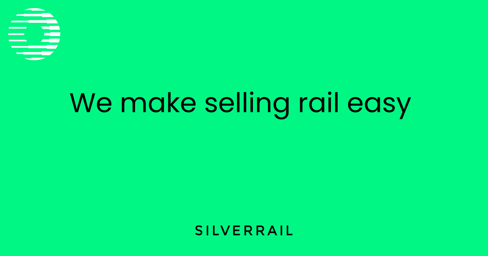

Your Q4 update names constant deployment and CI/CD as the next step after shorter SilverCore releases.
Useful next stepMap one release path from carrier change to rollback, then add contract tests around the highest-risk API calls.
Saw SilverRail hiring software engineers across API, cloud, and microservice work. This brief shows where extra delivery capacity could help SilverCore move faster.

The hiring signal says SilverRail is adding delivery power, not filling one small gap. The live roles point to Java, .NET, REST APIs, microservices, AWS, Docker, Kubernetes, and GitLab CI/CD. SilverCore is also adding seat maps, accessible journey planning, Iryo, Amtrak exchanges, and Renfe API work. That mix can slow teams when every market has different rules. If the bottleneck stays, releases may get safer but slower, while partner demand keeps rising.
Your Q4 update names constant deployment and CI/CD as the next step after shorter SilverCore releases.
Useful next stepMap one release path from carrier change to rollback, then add contract tests around the highest-risk API calls.
Eddy AI and Jira Cloud now sit near support and docs, where partner answers can affect trust.
Useful next stepSet a short AI-docs safety checklist for stale content, redaction, permissions, and risky SilverCore questions.
We would add a small API delivery squad, focused on one market flow or one SilverCore release path.
Trace one SilverCore path from search to ticket issue, refund, and support handoff.
Add contract and regression tests for JSON, XML, carrier rules, and partner edge cases.
Review GitLab CI, rollback checks, and smoke tests for safer low-downtime releases.
Check AI docs, Jira support fields, and security notes before partner rollout.
Elinext is a full-cycle software development company, active since 1997, with about 700 in-house specialists and no freelancers. We build web, mobile, backend, QA, AI, DevOps, and product design work for clients across Europe, North America, Asia, and Australia/NZ. For SilverRail, the fit is API delivery, QA automation, DevOps, and security-aware work backed by ISO 9001 and ISO 27001. Our named clients include Siemens, Broadcom, Volkswagen, TRUMPF, and TUI. That matches the squad above: senior engineers who can join your team and ship under your product lead.

Elinext turned static designs into a working booking prototype across desktop and mobile. It helped teams validate flows before production.
Read the case study
Elinext improved release automation for complex infrastructure software. The work cut delivery time while keeping quality and security checks.
Read the case study